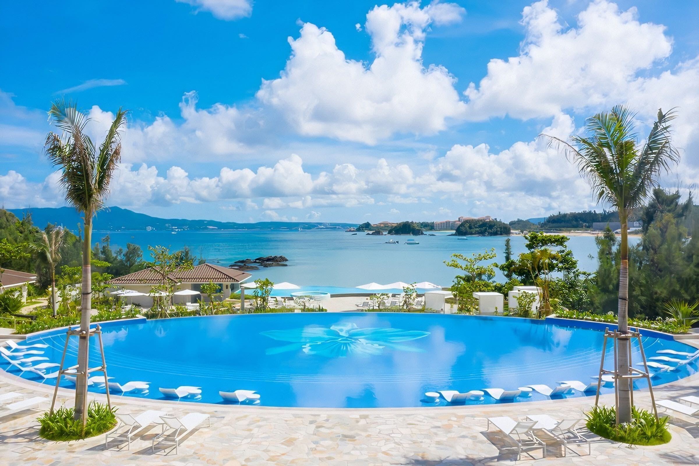
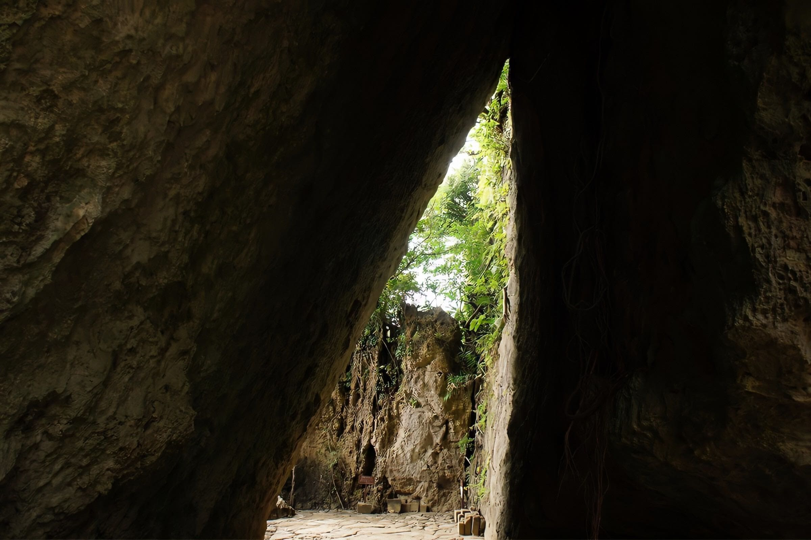
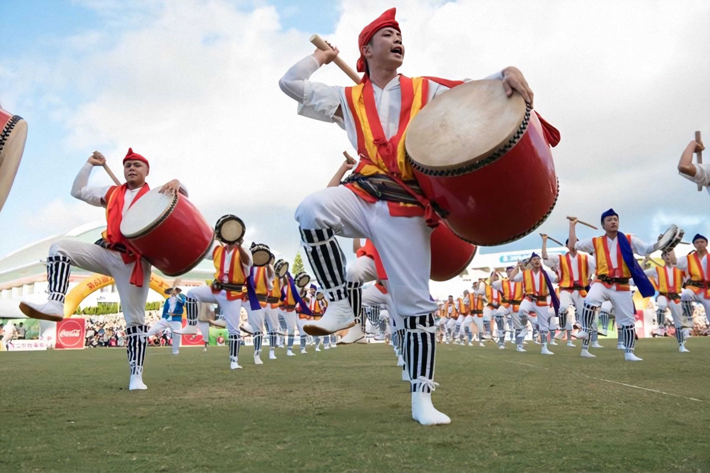
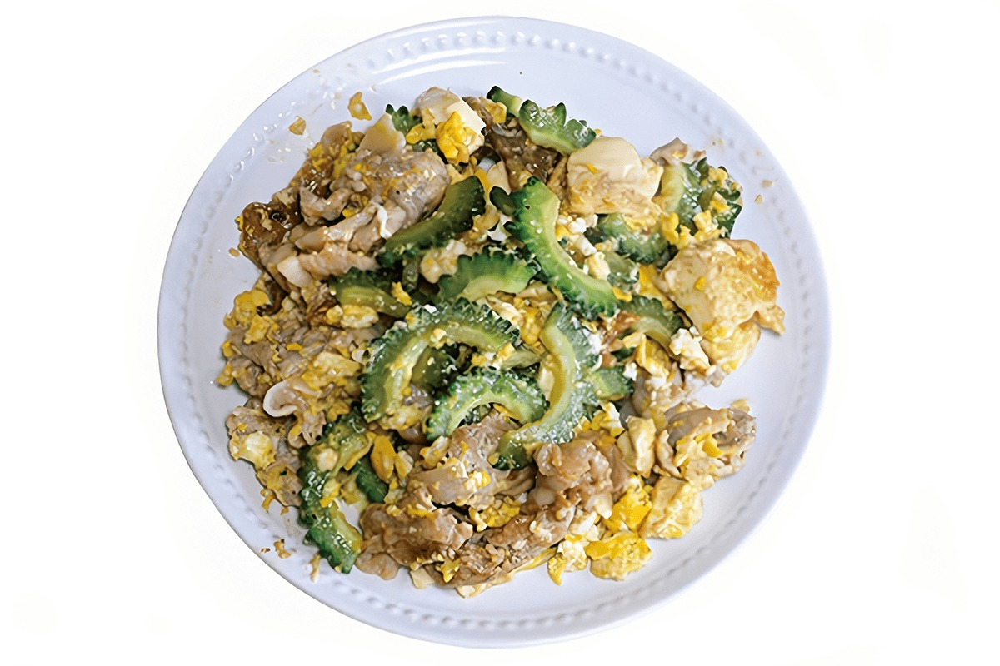
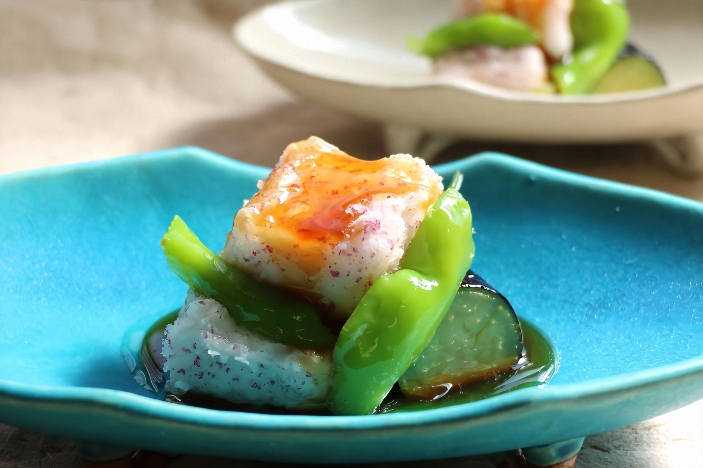
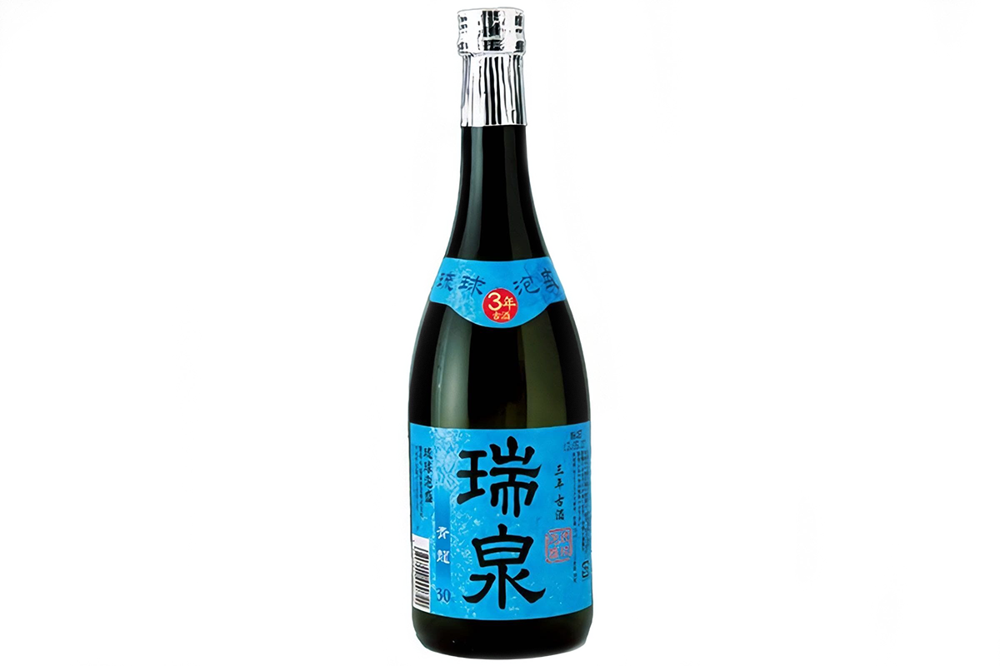
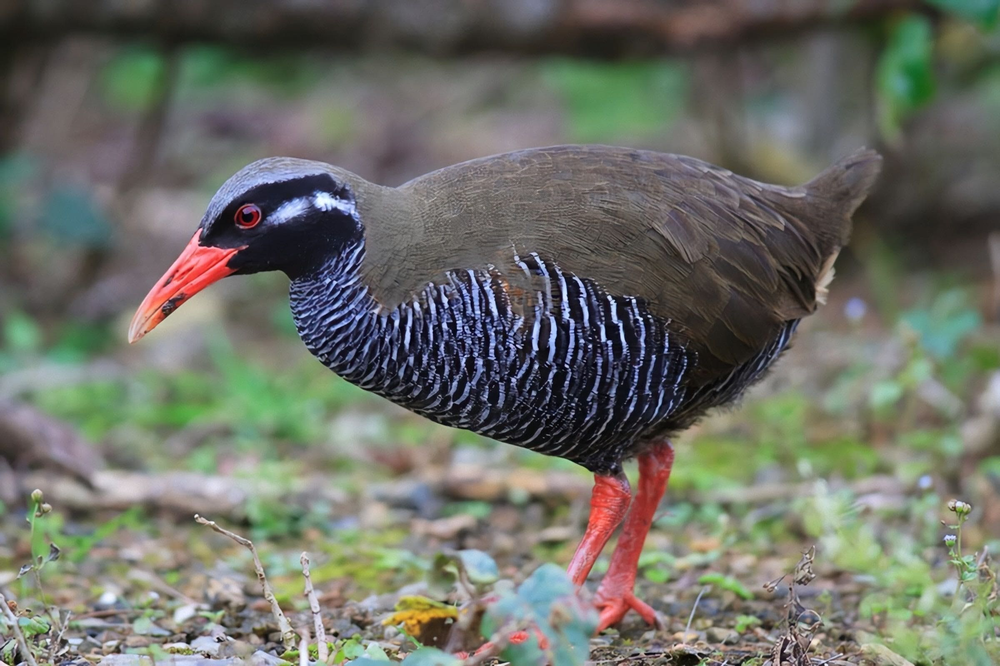

Префектура Окинава
Окинава: сто шестьдесят островов в субтропиках

Бассейн отеля «Халекулани Окинава» с мозаикой из орхидей на дне, а за ним бирюзовая бухта.
Самая южная префектура страны лежит в субтропиках: вокруг сто шестьдесят островов, вместо сакэ здесь варят крепкий напиток из риса, а на ужин подают горький овощ. Рассказываем, за чем ехать на Окинаву.
О префектуре
Острова, где сложилась своя страна
Окинава это единственная префектура Японии в субтропическом океаническом климате. Её острова разбросаны на очень большом пространстве: около тысячи километров с востока на запад и около четырёхсот с севера на юг, и всего здесь примерно сто шестьдесят островов, больших и совсем маленьких.
Рядом Китай, Тайвань и Юго-Восточная Азия, поэтому здесь веками шла морская торговля, и на островах сложилось самостоятельное государство Рюкю со своей культурой. Климат отличается от остальной Японии, обычные для японской кухни растения здесь не росли, а после Второй мировой войны острова долго находились под управлением американских военных. Так появилась особая кухня: гоя-тямпуру, окинавская соба и авамори соседствуют с американскими стейками и гамбургерами.
Сегодня это южный курорт. Острова окружают коралловые рифы, в списке Всемирного наследия числятся гусуку, то есть крепости королевства Рюкю, а крупные гостиничные марки одна за другой открывают здесь отели. Одним из первых в 2019 году пришёл «Халекулани Окинава», и префектура продолжает меняться.
Что посмотреть
Священная роща, где создали острова
Сэфа-утаки
Это главное святое место королевства Рюкю. По преданию, его создала богиня-творец Амамикё, и здесь шесть иби, то есть священных зон, где до сих пор совершают обряды. Вход открыт для посетителей, но это действующее место поклонения, поэтому вести себя здесь принято сдержанно.

- Адрес
- Chinen Kudeken, Nanjo, Okinawa
- Телефон
- +81 98-949-1899
Что ещё посмотреть
- Замок Сюри, крепость, вокруг которой каждый год проходит большой праздник
- Остров Кудака, маленький остров у южной оконечности
- Подводная дорога, дорога, проложенная прямо по морю между островами
Праздники
Барабаны, которые провожают предков
Эйса
Эйса это окинавское традиционное искусство, местный родственник общенационального танца бон, которым провожают души предков. В ночи старого праздника бон по улицам идут барабанщики: они бьют в большие барабаны и в маленькие нагрудные барабанчики паранку и танцуют целыми колоннами.

- Период
- с июня по сентябрь
- Место
- по всей префектуре Окинава
Другие праздники
- Хари, гонки на длинных лодках
- Перетягивание каната, массовая забава, в которой тянут огромный канат
- Праздник замка Сюри, историческое шествие у стен крепости
Музеи и архитектура
Крепости островного королевства
Гусуку Рюкю
Гусуку это крепости королевства Рюкю. Замок Сюри и соседние крепости вместе с другими связанными памятниками внесены в список Всемирного наследия ЮНЕСКО, а у стен замка каждый год устраивают праздник Сюри-дзё-мацури. Стены гусуку сложены из камня, и по ним видно, как островная архитектура приспосабливалась к тёплому влажному климату.
Местная кухня
Овощ, который горчит и освежает
Гоя-тямпуру
Слово тямпуру на окинавском диалекте значит «перемешать». В этом блюде перемешивают и жарят гоя, то есть горький огурец, а также тофу, то есть соевый творог, и свинину. Горечь овоща здесь считают не недостатком, а лекарством от жары.

Что ещё попробовать
- Соки-соба, лапша с большой тушёной куриной голенью
- Рафутэ, тушёная свиная грудинка
- Хираяти, жареная лепёшка из муки
Где поесть
Ресторан, где островная кухня стала современной
Рёритэн «Эй»
Здесь готовят авторские блюда из местных продуктов и подают кусус, то есть выдержанный авамори, который зреет годами. Ресторан любят и жители Урумы, и гости острова: зал похож на современное кафе, но посуду, стекло и ткани для него выбирали окинавские мастера.

- Адрес
- 1-27-35 Ishikawa, Uruma, Okinawa
- Телефон
- +81 98-964-7733
- Часы
- с 17:00 до 23:30, последний заказ в 22:30
- Выходные
- воскресенье
Ремёсла
Посуда, стекло и ткани островов
Островные ремёсла
Окинавские мастера работают с керамикой, стеклом и тканями. В ресторанах префектуры эту работу видно каждый день: еду здесь подают на местной посуде, а залы украшают островными тканями.
Что привезти
Крепкий напиток, который зреет годами
Авамори «Дзуйсэн» «Сэйрю»
Авамори это крепкий напиток из риса, островной родственник сакэ. Завод «Дзуйсэн» открылся в Сюри-дзакияме, одном из немногих мест, где королевство Рюкю разрешало делать авамори на продажу, и следило за этим строго. «Сэйрю» это три года выдержки, то есть кусус; бутылка 720 миллилитров стоит 1485 иен.

- Телефон
- +81 98-884-1968
- Сайт
- zuisen.co.jp/
Где остановиться
Отель, который пришёл с Гавайев
«Халекулани Окинава»
Гавайский отель с историей больше ста лет открылся на Окинаве в 2019 году. Название можно перевести как «дом, достойный рая», и в отеле стараются держать такую же планку сервиса.
- Адрес
- 1967-1 Nakama, Onna, Kunigami, Okinawa
- Телефон
- +81 98-953-8600
- Комнат
- 360
- Цена
- от 51 000 иен за ночь за номер с завтраком, налоги и сбор не включены
Местный диалект
Как здесь говорят «очень вкусно»
- иппэ-маасаночень вкусно
- фусин, тюрасан яазвёзды, как красиво
- сини итакаттабыло очень больно
- мэнсоорэдобро пожаловать
Рекорды
Чем Окинава отличается от остальной страны
- Единственная в стране префектура в субтропическом океаническом климате
- Самая южная точка Японии тоже здесь, на этих островах
- 160 островов входят в префектуру
- 55 природных памятников охраняются в префектуре
Вопросы и ответы
Что ещё спрашивают об Окинаве
Что такое гусуку?
Так называют крепости королевства Рюкю. Замок Сюри и соседние крепости вместе с другими связанными памятниками внесены в список Всемирного наследия ЮНЕСКО.
Почему в окинавской кухне есть стейки и гамбургеры?
После Второй мировой войны острова долго находились под управлением американских военных, поэтому американская еда прижилась здесь рядом с местной.
Справочник
Окинава в цифрах
Общие сведения
| Административный центр | Наха |
| Муниципалитеты | 11 городов, 11 посёлков, 19 деревень |
| Площадь | 2281 кв. км |
| Население | 1,45 млн человек |
| Природных памятников | 55 |
| Всемирное наследие | гусуку королевства Рюкю и связанные памятники |
Климат
| Средняя температура | +23,5 |
| Максимум | +31,2 |
| Минимум | +14,4 |
Для путешественника
| Островов в префектуре | около 160 |
| Протяжённость с востока на запад | около 1000 км |
| Протяжённость с севера на юг | около 400 км |
| Крупные курорты | открываются с 2019 года один за другим |
Птицы здешних лесов
В списке природных памятников префектуры значатся редкие птицы островов: дятел ногутигэра, которого встречают только в глухих лесах севера, и хищный канимуриваси, то есть хохлатый орёл. Увидеть их непросто: леса Янбару на севере острова густые и сырые.

Природные памятники
- Ногутигэра, редкая птица, которую охраняют как памятник природы
- Яэсэ, большая коралловая отмель
- Дюгонь, морское животное, которое здесь охраняют
- Солёный источник Сиокава, источник с солёной водой
- Канимуриваси, хищная птица островов